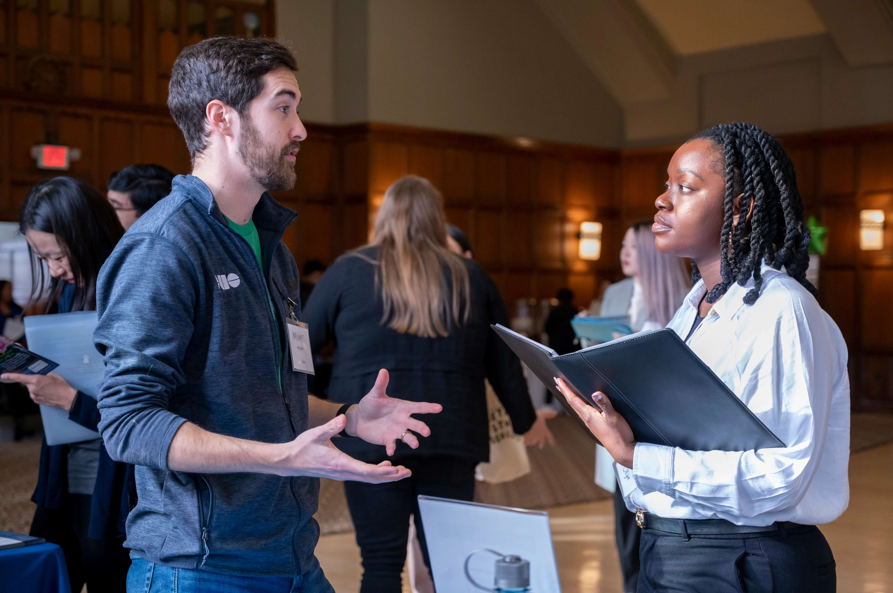
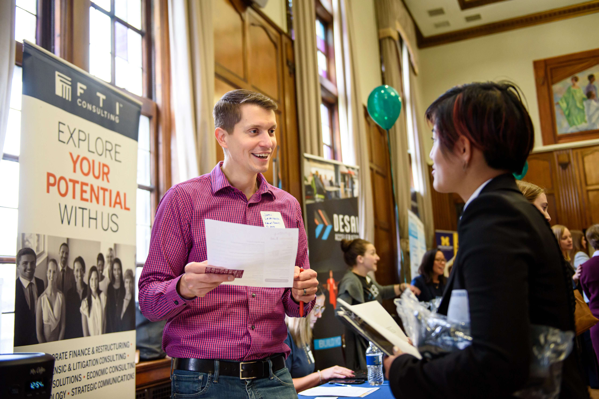

Building a Strategic Networking Plan
Building a network plan can feel overwhelming, but you already have connections and skills to start this journey. The following resources can help you develop a strong networking plan: from identifying key contacts to crafting your elevator pitch to preparing for networking events.
Building your Base
Identifying Key Connections
Starting with your existing connections is key. Use this Building a LAMP to identify your current network, including classmates, professors, and more.
Pro tip: LinkedIn and UCAN are a great start to your search.
Your Next Move: Networking
Once you identified your key connections:
- Use your LAMP to select the people you want to connect with.
- Plan your outreach whether through email, LinkedIn, or in-person meetings.
- Draft a message or email template, but remember to personalize it!
Check out CDO Guidebook for more tips and strategies on using AI in your outreach efforts.
Presenting Yourself
Develop your Elevator Pitch
An Elevator Pitch is a very fast and engaging self-introduction, purposefully designed to start a conversation. It should include engaging information about the individual and their goals.
Steps for Preparation:
- Use this Elevator Pitch Handout to start crafting your pitch.
- Practice with friends, family, or even in front of a mirror.
- Keep refining it until you feel confident.
Prepare for Conferences and Events
Steps to Prepare:
- Set goals and list out your identified connections.
- Update your deliverables, such as resume, portfolio, etc.
- Send follow-up messages and continue building the connections.
Resource: Conference Preparation Checklist
Outreach Messages
Steps to Follow Up:
- Review your notes from Conference Preparation Checklist.
- Send personalized thank-you messages
- Schedule follow-up meetings to continue connections.
Resource: Networking Outreach Email Examples
Additional Resources
- Intro to Making Connections: Learn to effectively connect with an alumni.
- Conference Prep: Preparation to connect with professionals, speak confidently, and follow up effectively.
- TIARA Method: Tips and strategies to prepare for an informational interview.
FAQ
-
How long should my emails be?
Try to keep it to 100 words or less. -
How long does the LAMP worksheet take to do?
It typically takes about 40 minutes to complete. -
What if I don’t have any connections?
UCAN is the perfect start to connect with Wolverine Alumni. -
What if I don’t have any experience?
Focus on skills from other experiences, such as coursework, volunteer work, or personal projects. -
Who can I reach out to for help?
You can always meet with a CDO Career Coach to review your materials.
Connect with the UMSI Career Development Office
The UMSI Career Development Office (CDO) offers personalized support through appointments, events, and resource guides. Visit the CDO website or find us on campus to learn more, schedule a coaching session, or just say hello.